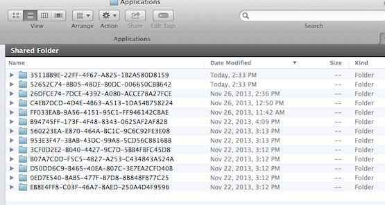
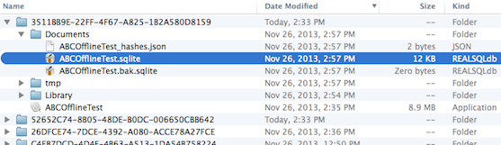
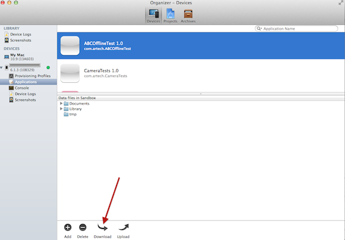
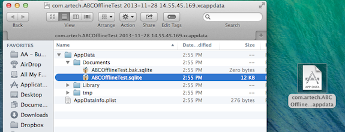

Getting your devices offline database files will help you significantly on testing and debugging the synchronization processes of your application. Using iOS Simulator:Every time you run a new application in the iOS emulator it is going to be created a new folder with a random name in /Users/<your_user>/Library/Application Support/iPhone Simulator/<iOS target version>/Applications/  Tip: It could be useful to order folders by Date Modified. Once you have found that folder, in the Documents folder you will find the .sqlite file you were looking for. It is named as <AppName>.sqlite, where <AppName> is the name of the main object associated with the offline database. If needed, the <AppName>_hashes.json file is in the same folder.  Using iOS Devices:If you are using your iOS device to test your application, once you have run the application in Xcode, open the Organizer by going to Window/Organizer ( Or press Command+Shift+O ) Find your application selecting the Applications section under your device in the left panel.  To open that package just right-click on it and select “Show package content”.  If needed, the <AppName>_hashes.json file is in the same folder. Using Android Virtual Devices:As said in the HowTo: Storing Android offline database files in the device card document, we can decide whether to choose local storage, or choose the external storage (sdcard) to place the offline database files. If local storage is selected, then the offline database files will be stored in the AVD at the following directory: /data/data/<Android Package Name>/files/db/ Finally we need to know the name of the offline database files, and this files are named like: <appName>.sqlite where <appName> is the name in lower case of the Main offline object. If needed, the <AppName>_hashes.json file is in the same folder. Summarizing:
Now that we have the full path of the file, we can get that file using the adb push command. We open the cmd console and navigate towards <AndroidSDKDirectory>/platform-tools adb pull <fullDatabaseFilePath> <localPath> Where <localPath> is the destination where we want the .sqlite file to be placed in your computer. For example: adb pull /data/data/com.artech.abcoffline.abcoffinetest/files/db/abcoffinetest.sqlite C:/temp/MyOfflineDatabaseFiles adb pull /data/data/com.artech.abcoffline.abcoffinetest/files/db/abcoffinetest_hashes.json C:/temp/MyOfflineDatabaseFiles Using Android Devices:If offline database files are going to be stored in the SD card, as explained in the HowTo: Storing Android offline database files in the device card document, once you plug as a store device your Android device, go to the following path in the sdcard device: <sdcard path>\Android\data\<Android Package Name>\files\db Where the <Android Package Name> is the value of the Main object Android Package Name property. For example: Computer\GT-P5110\Tablet\Android\data\com.artech.abcoffline.abcoffinetest\files\db\abcoffinetest.sqlite Computer\GT-P5110\Tablet\Android\data\com.artech.abcoffline.abcoffinetest\files\db\abcoffinetest_hashes.json Android ConsiderationsAll images referenced by the offline database are visible even if the device is offline, and you can find those images in the files\blobs folders. How to open the SQLite DB?Once you copy the SQLite file to your PC you can use any Application to open it like SQLSpy
See also
|
| Backlinks | |
| HowTo: Create offline mobile applications with a preloaded database | HowTo: Storing Android offline database files in the device card |